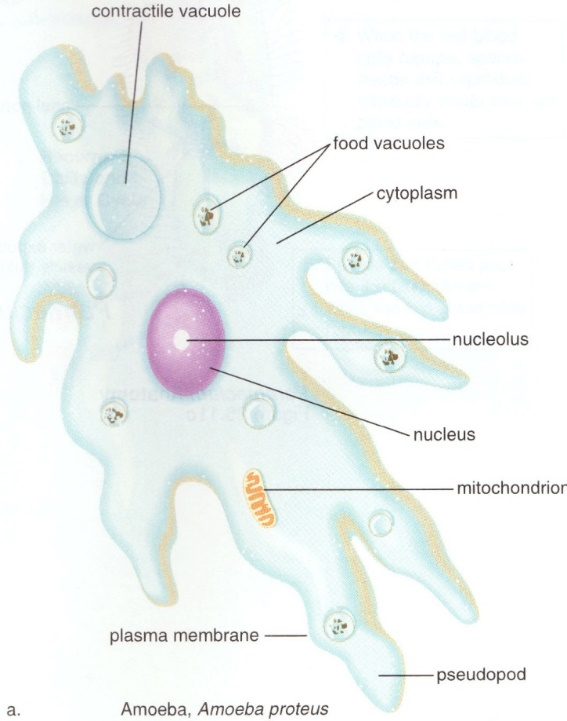
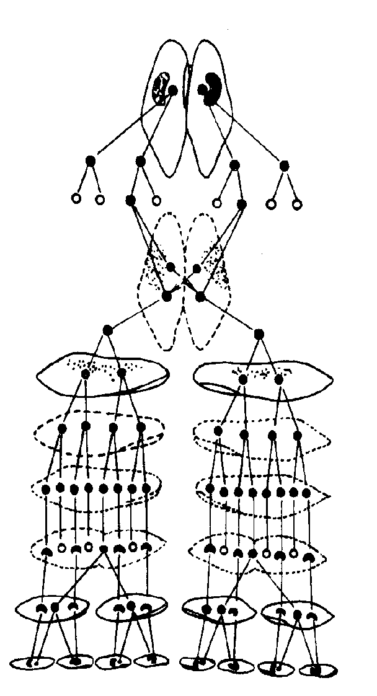
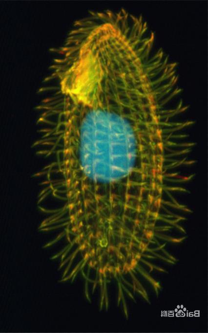

腔肠动物门 (Cnidaria) — 辐射对称·两胚层·刺胞动物
一、腔肠动物概述：真正后生动物的开始
腔肠动物门 (Cnidaria) 又称刺胞动物门，是真正后生动物 (Eumetazoa) 的开端——从原生动物（单细胞）到多细胞动物的第一次跨越。其基本体制是辐射对称（radial symmetry），演化中部分类群（如珊瑚纲）出现两辐对称 (biradial symmetry)。
本门全部水生，绝大多数生活于海洋，仅水螅属 (Hydra) 等少数生活在淡水中；现存种类约 10000 种，常见代表包括水螅、海蜇、海葵、珊瑚等。
主要特征（七项核心）：
- ① 辐射对称或两辐对称 — 体制轴呈辐射状，对水中固着或漂浮生活的适应（与两侧对称的爬行、游泳、飞行等主动运动方式不同）。
- ② 两胚层 + 中胶层 — 体壁由外胚层 (ectoderm)、内胚层 (endoderm)构成，二者之间夹有中胶层 (mesoglea)，中胶层由外、内胚层共同分泌，主要以胶原蛋白形式存在，是无结构的胶状物质。
- ③ 原始消化腔 (gastrovascular cavity) — 又称"胃管腔"，是体壁围成的中央腔，有口无肛门，食物由此进、残渣也由此出，故消化系统仍为"不完全消化系统"。
- ④ 胞内 + 胞外两种消化方式 — 腺细胞分泌消化酶进行胞外消化，形成食物微粒后再由内皮肌细胞进行胞内消化，是消化方式演化的重要过渡阶段。
- ⑤ 组织分化 — 上皮组织占优势，且兼具收缩功能（即"上皮肌肉细胞"，是最原始的肌肉结构）；出现感觉细胞、神经细胞、腺细胞、刺细胞、间细胞等。
- ⑥ 刺细胞 (cnidocyte) 与刺丝囊 (nematocyst) — 腔肠动物特有的攻击与防御胞器，为本门标志性特征，内含刺丝囊可弹出刺丝，注入毒素麻痹猎物。
- ⑦ 原始的网状神经系统 — 无中枢神经、无神经节，神经细胞彼此连成网状，传导无方向、传导速度慢，是动物界最简单最原始的神经系统。
辐射对称 — 沿身体纵轴有多个对称面，适合固着、漂浮生活（无方向性）。
两侧对称 — 仅一个对称面，适合爬行、游泳、飞行等主动运动（头化、口-肛分化）。
辐射 → 两侧 是无脊椎动物演化的重要分水岭，扁形动物是首个出现两侧对称的类群。
中胶层 ≠ 中胚层：中胶层是无结构胶状物，不是真正胚层，故腔肠动物仍是两胚层动物。
二、三纲详细对比（核心考点）
腔肠动物门传统上分为三纲：水螅纲 (Hydrozoa)、钵水母纲 (Scyphozoa)、珊瑚纲 (Anthozoa)。三纲在"水螅型/水母型发达程度"与"生殖腺来源"上差异显著，是联赛常考点。
演化关系：水螅纲最原始（两型并存、世代交替明显），钵水母纲水母型发达，珊瑚纲水螅型最发达（无水母型）。
| 特征项 | 水螅纲 Hydrozoa | 钵水母纲 Scyphozoa | 珊瑚纲 Anthozoa |
|---|---|---|---|
| 代表动物 | 水螅 Hydra、薮枝螅 Obelia、桃花水母 | 海蜇 Rhopilema、海月水母 Aurelia | 海葵、石珊瑚、海鸡冠、海鳃 |
| 生活史 | 水螅型与水母型世代交替 | 水母型发达，水螅型退化，仍有世代交替 | 只有水螅型，无水母型，无世代交替 |
| 水母型 | 小型（缘膜 velum 有） | 大型水母，无缘膜，具触手囊 | 完全无 |
| 水螅型 | 发达，多有群体，围鞘 | 退化（仅为螅状幼体） | 发达，结构比水螅纲复杂（有口道、口道沟、隔膜） |
| 生殖腺来源 | 外胚层 | 内胚层 | 内胚层 |
| 体型 | 辐射对称 | 辐射对称 | 多为两辐对称（如海葵） |
| 骨骼 | 无（群体常有围鞘） | 无 | 多数有石灰质/角质外骨骼（造礁珊瑚） |
| 生活环境 | 海、淡水 | 全部海产 | 全部海产 |
| 代表意义 | 世代交替典型类群 | 水母型高度发达 | 造礁，与虫黄藻共生 |
三、代表动物水螅 Hydra 的解剖
3.1 外部形态与生活方式
水螅是水螅纲的典型代表，生活于水流较缓、水草丰富的清洁淡水中。是腔肠动物研究的经典模式生物，体长 0.5–1.5 cm。
形态结构：
- 体型呈圆柱形（圆筒状），可伸缩。
- 一端为基盘 (basal disc / foot)，可分泌黏液附着于水草或石块；
- 另一端为口面 (oral end)，中央有口，周围环生 5–12 条触手 (tentacle)；
- 口通向体内唯一的消化循环腔 (gastrovascular cavity)。
运动方式（三种）：
- ① 捕食运动：触手伸缩捕食水蚤等小型水生动物。
- ② 尺蠖运动：身体弯曲，以口端与基盘交替附着移动。
- ③ 翻筋斗运动：身体一侧翻起，触手着地，整体翻转。
食性：肉食性，捕食水蚤、蠕虫、甲壳类等水生小动物；消化方式为细胞外消化（腺细胞分泌消化酶） + 细胞内消化（内皮肌细胞吞噬）。
1. 实验研究的好材料 — 再生能力极强（切成 1/100 仍可重生完整个体）；
2. 水蚤是水螅的主要食物，但水螅不食鱼虾，故"水螅"是清洁淡水指标生物，水华治理中不放水螅（肉食性，不滤食藻类）。
3. 水螅为雌雄同体（monoecism）但多为异体受精。
3.2 体壁结构（外胚层 + 中胶层 + 内胚层）
水螅体壁由"两胚层 + 中胶层"构成，从外到内依次为：
外胚层 (ectoderm)：
- 外皮肌细胞 (epitheliomuscular cell)：体表主要细胞，兼具保护与收缩功能，是上皮组织 + 肌肉组织的最原始结合。基部有肌原纤维，收缩方向：沿体轴纵行。
- 腺细胞 (gland cell)：基盘处多，分泌黏液以附着。
- 间细胞 (interstitial cell)：未分化细胞，可分化为刺细胞、性细胞等，是干细胞。
- 感觉细胞 (sensory cell)：分布于体表与触手，感受外界刺激。
- 神经细胞 (nerve cell)：位于外胚层基部，突起彼此相连形成神经网。
- 刺细胞 (cnidocyte)：腔肠动物特有，含刺丝囊 (nematocyst)，是攻击防御胞器，多分布于触手。
中胶层 (mesoglea)：
- 无细胞结构，由外、内胚层共同分泌，主要以胶原蛋白形式存在的胶状物质；
- 起支持、分隔、缓冲作用；
- 中胶层 ≠ 中胚层，故腔肠动物仍为两胚层动物。
内胚层 (endoderm)：
- 内皮肌细胞：营养与运动双重功能，肌原纤维收缩方向：环绕体轴横行（与外皮肌细胞方向垂直）。
- 腺细胞：分泌消化酶至消化腔，进行胞外消化。
3.3 神经网 (nerve net) — 原始的神经系统
- 神经细胞位于外胚层基部（接近中胶层），突起彼此相连形成网状神经系统；
- 无中枢、无神经节；
- 传导无方向（弥散式），速度慢；
- 部分腔肠动物有 1 个、2 个或 3 个神经网，水螅仅 1 个神经网（位于外胚层）。
外皮肌细胞肌原纤维沿体轴纵行→ 身体缩短；
内皮肌细胞肌原纤维环行→ 身体伸长变细。
两者协同工作，使水螅能伸缩、弯曲、翻筋斗。
神经网的关键事实：
- 水螅神经网位于外胚层基部，不在内外胚层各 1 个（这是干扰选项！2007 全国 24 题答案 C）。
- 神经网是动物界最简单、最原始的神经系统。
- 中胶层有神经网的情况极少，部分钵水母才有。



四、世代交替 (Metagenesis) — 水螅型与水母型的交替
世代交替指有性世代与无性世代在生活史中规律性交替出现的现象。在腔肠动物中表现为水母型 (medusa，有性世代，水中漂浮) 与水螅型 (polyp，无性世代，固着生活) 的交替。
薮枝螅 Obelia 生活史（经典案例）：
- 水螅型群体（无性世代）：固着生活，由螅根、螅茎、围鞘构成；营养体 (gastrozooid) 负责捕食，生殖体 (gonozooid) 负责无性生殖。
- 生殖体 → 水母芽 → 水母：生殖体以出芽方式产生水母芽，水母芽发育为水母体 (medusa)，脱离群体漂浮于水中。
- 水母体 → 有性世代：水母体雌雄异体，分别产生卵与精子，体外受精为合子。
- 合子 → 浮浪幼虫 (planula)：合子经卵裂形成浮浪幼虫，体表遍生纤毛，可游泳，寻找适宜基质。
- 固着 → 新水螅型群体：浮浪幼虫固着，以内移法 (ingression) 形成两胚层，发育为新水螅型群体，重复循环。
"世代交替"记忆口诀：
水螅型（无性，固着）→ 出芽 → 水母体（有性，漂浮）→ 受精 → 合子 → 浮浪幼虫 → 固着 → 新水螅型
水母型 — 形如伞或钟，口朝下，漂浮生活，有性世代；
水螅型 — 圆筒状，口朝上，固着生活，无性世代；
两者基本结构相似（口、触手、消化腔），但水母型中胶层较厚、伞部有感觉器（触手囊），适于漂浮。
浮浪幼虫是腔肠动物特有，两胚层形成方式为"内移法"（细胞从囊胚内移入形成内胚层）。
五、各纲代表动物的详细特征
5.1 钵水母纲——海蜇 Rhopilema esculentum
钵水母纲又称"真水母纲"，是水母型最发达的类群，全部海产。代表为海蜇（可食用）、海月水母。
与水螅水母（小型水母）的比较：
- 大小：钵水母大型水母（海蜇伞径可达 50–60 cm），水螅水母小型。
- 缘膜 (velum)：钵水母无缘膜，水螅水母有。
- 感觉器官：钵水母有触手囊 (rhopalium)，位于伞缘，内含平衡石、眼点等，有感觉和平衡功能；水螅水母无。
- 生殖腺来源：钵水母生殖腺来自内胚层，水螅水母来自外胚层。
- 水螅型：钵水母水螅型退化（仅存螅状幼体），水螅水母水螅型发达。
海月水母生活史：
- 受精卵 → 浮浪幼虫 → 固着 → 螅状幼体 (scyphistoma)；
- 螅状幼体 → 横裂生殖 (strobilation) → 碟状幼体 (ephyra)；
- 碟状幼体 → 成熟水母。
1. 食用 — 海蜇皮（伞部）、海蜇头（口柄部），中国沿海养殖量大；
2. 风暴预报：模仿水母触手囊的次声波感受器，研发出"风暴预感仪"，能提前 15 小时预报风暴；
3. 刺细胞中的毒素可致皮炎，严重者过敏性休克。
5.2 珊瑚纲——海葵 Anthopleura 与石珊瑚
珊瑚纲是腔肠动物门最大的一纲，全部海产，现存量 6000+ 种。只有水螅型，无水母型，无世代交替。水螅型构造比水螅纲水螅体复杂得多。
海葵（代表动物）形态结构：
- 形状如花，故名"海葵"。圆筒形，单体，无骨骼。
- 结构：口盘 + 触手（6 的倍数）+ 基盘；
- 触手围绕在口的周围，触手数目为 6 的倍数，是其分类特征。
- 体型为两辐对称 (biradial symmetry)，只有 2 个对称面，是辐射对称 → 两侧对称的过渡形式。
- 内部结构：口 → 口道 (stomodeum) → 口道沟 (siphonoglyph) → 消化腔；
- 消化腔被隔膜 (mesentery) 隔成许多小室，隔膜是内胚层向消化腔垂直长入的突起；
- 毒丝、隔膜丝 (mesenterial filament)：位于隔膜游离缘，含刺细胞，可麻醉捕获的猎物，同时增加消化面积。
骨骼的形成：
- 海葵等无外骨骼；
- 大多种类（如石珊瑚）外胚层能分泌石灰质或角质的骨骼，构成珊瑚体。
常见种类：
- 海葵：单体、无骨骼；
- 石珊瑚 (Scleractinia)：分泌石灰质外骨骼，是造礁珊瑚的主要类群；
- 海鸡冠 (Alcyonium)：群体、肉质软珊瑚；
- 海鳃 (Pennatula)：形如羽毛，群体；
- 海仙人掌、石芝等。
介于辐射对称（多个对称面）与两侧对称（一个对称面）之间。只有 2 个对称面，与口道沟的位置相关。
触手数目 6 的倍数（Hexacorallia，六放珊瑚亚纲）；
另有 8 的倍数（Octocorallia，八放珊瑚亚纲），如海鸡冠、海鳃。
六、珊瑚礁生态：共生·造礁·白化
珊瑚礁 (coral reef) 是地球上生物多样性最高的海洋生态系统之一，被誉为"海洋中的热带雨林"。其形成依赖造礁石珊瑚与虫黄藻 (zooxanthellae, Symbiodinium) 的共生关系。
虫黄藻共生：
- 虫黄藻是单细胞甲藻 (dinoflagellate)，共生于珊瑚虫内胚层细胞内。
- 双向互利：
- 虫黄藻 → 珊瑚：进行光合作用，提供有机物（碳水化合物），相当于"光合工厂"。
- 珊瑚 → 虫黄藻：提供氮、磷、CO₂、庇护场所。
- 虫黄藻的光合产物可占珊瑚营养的 90%，故造礁珊瑚只能在浅水透光层（0–50 m）生活。
造礁过程：
- 石珊瑚外胚层不断分泌碳酸钙骨骼 (CaCO₃)；
- 老一代珊瑚死亡后，新一代继续在其上生长，骨骼累积形成巨大的珊瑚礁；
- 经历数千年至数百万年可形成大堡礁、太平洋珊瑚三角区等。
珊瑚白化 (coral bleaching) 现象：
- 当海水温度异常升高（比常年高 1–2 °C 持续数周）、强光、污染、低盐度等环境压力时，
- 珊瑚虫将虫黄藻逐出体外（共生关系破裂）；
- 失去虫黄藻的色素后，珊瑚露出白色碳酸钙骨骼，称为"白化"；
- 白化 ≠ 死亡，若环境改善、虫黄藻回归，珊瑚可恢复；
- 持续高温 → 珊瑚饥饿死亡，2014–2017 全球大堡礁发生 3 次大规模白化事件，海洋学界密切关注。
珊瑚 = 单个珊瑚虫或群体；
珊瑚礁 = 无数珊瑚虫的碳酸钙骨骼累积而成。
虫黄藻与珊瑚是"专性共生 (obligate symbiosis)"，
二者关系破裂则珊瑚不能生存，是共生演化的经典案例。
拓展：除珊瑚外，砗磲 (Tridacna) 等大型贝类也共生虫黄藻。
七、刺细胞 (Cnidocyte) 与刺丝囊 (Nematocyst) — 腔肠动物特有
刺细胞是腔肠动物特有的攻击与防御胞器，为本门的标志特征之一（"刺胞动物"一名即源于此）。
结构与功能：
- 刺细胞呈椭圆形或球形，多分布于外胚层，特别是触手；
- 细胞内含一个刺丝囊 (nematocyst)，其内储存卷曲的刺丝 (cnidocil)；
- 刺细胞顶端有一根触发器 (cnidocil trigger)，受机械或化学刺激时，刺丝囊瞬间弹射刺丝，刺入猎物并注入毒素，速度可达 2 m/s，加速度 5×10⁴ g；
- 刺丝囊一次性使用，使用后由间细胞分化形成新刺细胞补充。
水螅中刺细胞与腺细胞的分布：
- 基盘 — 腺细胞多（分泌黏液附着）；
- 触手 — 刺细胞多（捕食、攻击防御）。
常见问题：水螅装片观察中，腺细胞集中于基盘，刺细胞集中于触手，由功能可推知结构（2011 全国 50 题答案 B）。
1. 穿刺刺丝囊 (penetrant) — 刺入猎物，注射毒素；
2. 缠绕刺丝囊 (volvent) — 缠绕捕获；
3. 粘着刺丝囊 (glutinant) — 粘附固定。
各种刺丝囊配合使用，构成完整捕食机制。
高中教材衔接 · 课标对应
人教版（2019 版）高中生物教材对应：
- 必修 1 第 4 章「细胞的物质输入和输出」：水螅刺细胞放刺丝涉及胞吐作用；消化涉及胞吞。
- 必修 1 第 6 章「细胞的生命历程」：水螅的间细胞是干细胞，可分化为刺细胞、性细胞等，对应"细胞分化"与"细胞全能性"。
- 必修 2 第 3 章「基因的本质」：海蜇绿色荧光蛋白 (GFP) 作为基因表达报告分子，2008 年下村修等获诺贝尔化学奖。
- 必修 3 第 2 章「动物和人体生命活动的调节」：神经网作为最原始的神经系统，铺垫"神经系统由低等到高等的演化"。
- 必修 3 第 4 章「种群和群落」：珊瑚礁作为"海洋中的热带雨林"——生物多样性最高的生态系统之一。
- 选择性必修 2 第 2 章「群落」：种间关系——珊瑚与虫黄藻的互利共生。
- 选择性必修 2 第 4 章「人与环境」：珊瑚白化作为全球气候变暖的生物响应。
高中 — 认识水螅、知道辐射对称、了解珊瑚礁生态。
竞赛 — 掌握体壁结构、各纲对比、世代交替、共生机制、白化机制。
衔接点：神经网演化、刺胞结构、珊瑚白化（环境与生物响应）。
2025 / 2026 联赛 · 初赛真题链接
本章重难点深度解析
难点 1：腔肠动物的"演化地位"——真正后生动物的开端
腔肠动物是真正后生动物 (Eumetazoa) 的开始，相比海绵动物（侧生动物）有以下关键进步：
- 有真正组织：上皮、神经、腺体、肌肉组织的雏形；海绵动物无组织分化。
- 有神经细胞：原始的神经网（虽无中枢）；海绵动物无神经细胞。
- 有原始消化腔：胃管腔，有口；海绵动物只有水沟系，无消化腔。
- 有刺细胞：腔肠动物特有，海绵动物无。
但腔肠动物仍存在原始性：
- 只有两胚层（中胶层不是真正胚层），无中胚层、无体腔，故为两胚层动物。
- 辐射对称（除部分两辐对称外），仍是"被动适应"体型。
- 消化系统有口无肛门（"不完全消化系统"），食物进出同一开口。
- 神经系统弥散无中枢。
因此，腔肠动物 = 多细胞动物的"原始状态"，是从单细胞向三胚层两侧对称动物的过渡阶段。
原生动物（单细胞）→ 海绵动物（无组织）→ 腔肠动物（两胚层、辐射对称） → 扁形动物（三胚层、两侧对称，首次有中胚层）→ 后续类群。
从腔肠动物 → 扁形动物是另一关键节点：两胚层 → 三胚层、辐射 → 两侧、被动 → 主动。
难点 2：体壁结构与"上皮肌肉细胞"的概念
上皮肌肉细胞 (epitheliomuscular cell) 是腔肠动物特有的概念：
- 高等动物中，上皮组织负责保护、分泌、吸收，肌肉组织负责收缩，二者各为独立组织；
- 腔肠动物中，一个细胞兼具上皮（保护）和肌肉（收缩）双重功能，是"组织"分化初期的原始状态；
- 外皮肌细胞：分布于外胚层，肌原纤维沿体轴纵行，收缩时使身体缩短；
- 内皮肌细胞：分布于内胚层，肌原纤维环行，收缩时使身体伸长变细；
- 二者协同工作 → 水螅能伸缩、弯曲、翻筋斗。
这是组织分化未完成的最直接证据，与海绵动物"无组织分化"形成对比，说明腔肠动物是"组织水平"的多细胞动物。
上皮 → 独立的上皮组织；
肌原纤维 → 独立的肌肉组织；
上皮肌肉细胞 → 肌肉组织从上皮中分化独立的过程。
这是组织起源的经典模型，体现"由未分化到分化"的过程。
难点 3：世代交替的两种理解
世代交替在生物界不同类群中含义不同，需区分：
- 腔肠动物的世代交替：水母型（有性，漂浮）与水螅型（无性，固着）的交替。水母型是单倍体 (n)，水螅型是二倍体 (2n)，但因腔肠动物生活史中两种体型的核相难以简单分为单倍/二倍，故称为"无性世代 + 有性世代"交替。
- 植物的世代交替：孢子体 (2n) 与配子体 (n) 的规律性交替，染色体倍数规律变化。
- 苔藓植物：以配子体 (n) 为主，孢子体寄生在配子体上。
- 蕨类植物：以孢子体 (2n) 为主，配子体 (n) 独立生活（原叶体）。
- 种子植物：以孢子体 (2n) 极度发达，配子体 (n) 极度简化（如花粉粒、胚囊）。
腔肠动物的"世代交替"概念与植物学的世代交替不完全相同，需要谨慎区分：腔肠动物是生活史中两种不同体型的交替，并非染色体倍数的规律性变化。
- 薮枝螅（水螅纲）：典型世代交替，水螅型 + 水母型同等重要；
- 海月水母（钵水母纲）：水母型占优势，水螅型退化为螅状幼体；
- 海葵（珊瑚纲）：无水母型，无世代交替，只有水螅型。
演化趋势：水螅型 → 水母型进化方向，珊瑚纲反而是保留最原始的"只有水螅型"特征。
难点 4：刺细胞的功能与分子机制
刺细胞放刺丝是动物界最快的胞吐过程之一：
- 刺细胞内储存高浓度Ca²⁺和渗透活性物质；
- 受到机械/化学刺激时，触发器 (cnidocil) 激活，水分子高速涌入，渗透压剧增；
- 刺丝囊内压剧增，刺丝以 2 m/s 速度弹出，加速度可达 5×10⁴ g；
- 刺丝刺入猎物，毒素从刺丝尖端注入，数毫秒内完成麻痹；
- 刺丝囊一次性使用，由间细胞分化形成新刺细胞补充。
刺丝囊毒素：
- 成分复杂，主要包括神经毒素、溶血毒素、皮肤坏死毒素等；
- 箱形水母 (Chironex) 的毒素是已知最致命，可在数分钟内致人死亡；
- 医学应用：刺丝囊毒素可作为镇痛药、抗肿瘤药物研究的分子模板。
1. 刺丝发射机制是研究"快速胞吐"和"生物超快力学"的模型；
2. 绿色荧光蛋白 (GFP) 来自水母，2008 年诺贝尔化学奖表彰 GFP 在生物医学中的应用；
3. 刺细胞基因组研究：2019 年，Cell 杂志发表了水螅刺细胞分化与发育的分子机制研究，为干细胞分化研究提供模型。
难点 5：珊瑚白化与全球气候变化
珊瑚白化 (coral bleaching) 是当前最受关注的全球生态问题之一：
- 触发因素：海水温度异常升高（比常年高 1–2 °C 持续数周）、强光辐射、污染、低盐度、疾病等。
- 过程：珊瑚虫与虫黄藻的共生关系破裂，珊瑚虫将虫黄藻逐出体外，露出白色碳酸钙骨骼。
- 白化 ≠ 死亡：若环境改善、虫黄藻回归，珊瑚可恢复；若持续高温 → 珊瑚饥饿死亡（可持续数月）。
- 全球性影响：
- 大堡礁（澳大利亚）2014、2016、2017 年发生 3 次大规模白化，北部 50% 珊瑚死亡；
- 2014–2017 年全球珊瑚礁经历史无前例的连续 3 年大规模白化事件；
- IPCC 预测：全球升温 1.5 °C 将导致 70–90% 珊瑚礁消失；升温 2 °C 将导致 99% 以上消失。
白化的分子机制（前沿研究）：
- 高温 → 虫黄藻光合作用产生活性氧 (ROS) 增多；
- ROS 损伤虫黄藻细胞膜与光合系统；
- 珊瑚虫启动免疫反应，识别并排出受损虫黄藻；
- 珊瑚虫消化细胞释放细胞凋亡信号，诱导虫黄藻程序性死亡。
1. 减少温室气体排放（根本措施）；
2. 培育耐热虫黄藻株系（澳大利亚 AIMS 已成功）；
3. 辅助进化：人为选择耐热珊瑚/虫黄藻组合；
4. 建立海洋保护区 (MPA)，限制捕捞与旅游；
5. 监测：NOAA 全球珊瑚礁监测系统（CRW）实时发布白化警报。